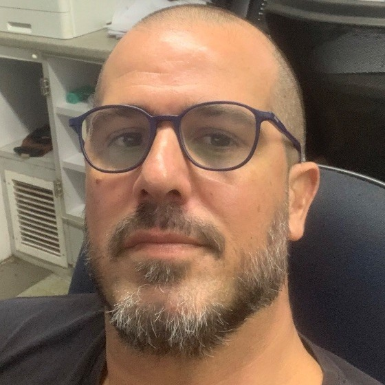

52º Congresso Brasileiro de Geologia
Referências Bibliográficas — 52º CBG
Referências bibliográficas do trabalho científico apresentado no 52º Congresso Brasileiro de Geologia.
Abrir referências bibliográficas (PDF)
Geociências · Hidrossedimentologia · Geologia Ambiental · Dinâmica Costeira
Artigos científicos, pesquisas e perfis acadêmicos reunidos em um único endereço.
Estudos voltados aos processos geológicos, hidrossedimentológicos e costeiros, incluindo modelagem ambiental e gestão de bacias hidrográficas.
Os títulos e dados dos artigos ainda serão cadastrados. Os perfis acadêmicos abaixo já possuem seus links.Referências bibliográficas do trabalho científico apresentado no 52º Congresso Brasileiro de Geologia.
Abrir referências bibliográficas (PDF)[Breve descrição do estudo e dos principais resultados.]
Link a inserirDOI: [inserir DOI][Breve descrição do estudo e dos principais resultados.]
Link a inserirDOI: [inserir DOI][Breve descrição do estudo e dos principais resultados.]
Link a inserirDOI: [inserir DOI]Depois de publicar esta página, cole seu endereço público abaixo. O código poderá ser impresso em banners, cartões e apresentações.
O QR Code será habilitado quando você informar a URL pública (https://...).